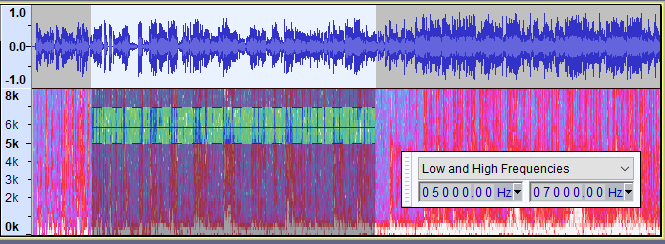

Spectral Delete
From Audacity Development Manual
The Spectral Delete is used with a Spectral Selection to delete that spectral selection from the audio.
Accessed by:
To use this command you need to make a spectral selection and then use the deletion command.
There are no parameters to set for this command, and thus no dialog.
Make the Selection
Here we see an audio track shown in Multi-view with both waveform and spectrogram showing.
A spectral selection has been made in the spectrogram part of the track from 5 kHZ to 7 kHz.
- 
The Spectral Selection Toolbar has been enabled and floated to aid and show the accurate selection range.
Make the deletion
After applying the Spectral Delete command we can see that Audacity has removed that part of the spectrum for the time range of the selection

What this example has done is to remove frequencies from 5kHz to 7 kHz from the time range selected.
Observe that this has not visibly change the waveform part of the track.
For this we have used a higher than default "Window Size" of 4096 in the spectrogram settings, because that shows the accuracy of the frequency cut much better.
| For technical reasons this effect is not suitable for selecting very low frequencies. The actual lower limit depends on the track sample rate. For a sample rate of 44100 Hz, if the lower frequency bound goes below about 100 Hz, then all frequencies below the upper bound will be removed (as if the selection extended down to zero Hz). |